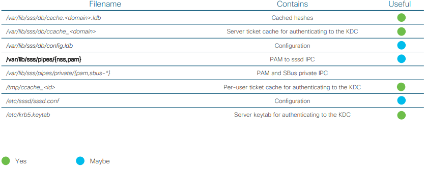

Sssd
Open source
• Potential attacks
• Stealing hashes from the file system
• Stealing hashes and plain text from memory
• Messing with the IPC
• Notes for the blue team
• Runs as “root” user
• Integrates with SELinux
• Has compile time hardening
